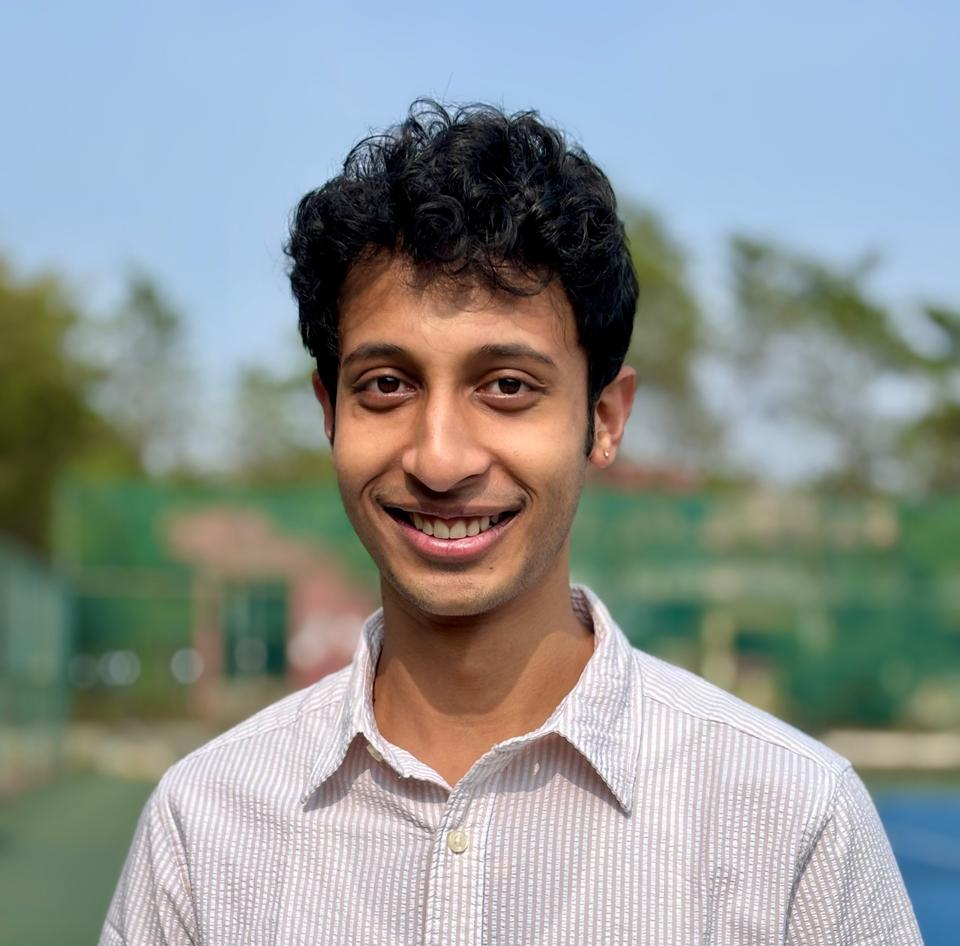

Jyotirmoy Singh
| About | Research | Resume | Startup Adventures | Blog |

Hi, I'm Jyotirmoy Singh. I'm a final-year student at BITS Pilani, double majoring in Computer Science (BE) and Economics (MSc). GPA: 8.6/10.
Right now I'm building Jovalent, an autonomous back office for US small businesses. We automate compliance and finance, specifically reconciliation, form filings, and tax without any human in the loop. The point is not to help a human do this work faster. The point is to do the work itself. We're launching the $299/mo tier now after a paid alpha at $40/mo. More on this in the blog.
Before that, I spent the summer of 2025 at Google in Hyderabad working on GKE Backup. I wrote integration tests for seven async schedulers in Go, took test coverage from 0% to 42%, and caught 27+ bugs before they hit production. Shipped three weeks ahead of schedule.
My thesis is supervised by Prof. Anand Rao at Carnegie Mellon University and Prof. Chittaranjan Hota at BITS Pilani. The work proposes a new architecture for multi-agent AI systems, treating orchestration as a kernel concern rather than a prompting problem. I picked this topic partly because I genuinely love operating systems and wanted to see how far the OS abstraction could go when applied to agents. Jovalent is built directly on the LangGraph implementation of that thesis work. See the research page for details and a blog post about the thinking behind it.
I have two papers coming out of this period of research. One on edge-deployable anomaly detection for clinical data (under review at ICML 2026) and one on explainable AI for predictive healthcare (targeting NeurIPS 2026).
Before my thesis year, I led a team of four on a $150K funded project with Impactsure Technologies building compact language models for a financial services firm.
I was invited to the OpenAI Emerging Talent Community in 2025 and attended Y Combinator Startup School in person in Bangalore.
I'm a National Level Gold Medalist in Mathematics, which I still find more useful than I expected. And I was a Teaching Assistant for Machine Learning at BITS Pilani in Spring 2025.
On the side, I built a delta-neutral crypto funding rate arbitrage bot over a weekend as a quant exercise. Short perp, long spot, collect the funding rate. Backtested Sharpe of 3.21 in the Oct 2023 - Apr 2024 bull market, 0.089% max drawdown. Currently sitting dormant because the market doesn't have rates above the entry threshold right now, which is exactly what a well-designed strategy should do. I wrote a post about it.
Before any of this, I was a competitive gaming kid. I launched my first startup at 12 in the eSports industry, and by 14 had founded a gaming league with a five-figure prize pool. That background in building things early is probably why I keep starting companies.